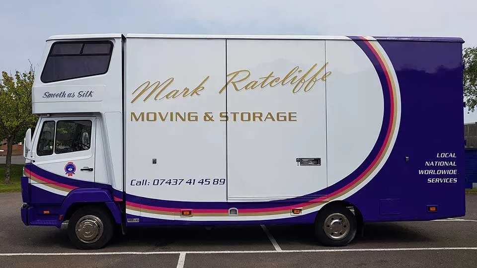

Mark Ratcliffe Moving is a full member of the British Association of Removers Overseas Group. From our Lower Dicker depot just outside Eastbourne we have arranged international relocations to more than 200 countries and territories. We are a specialist UK-to-Thailand mover, and we routinely handle moves to France, Spain, Australia, New Zealand, the USA, Canada, the UAE and South Africa. Every international move uses our premium pad-wrap and export-grade crating, handled by trained crews and partnered with vetted destination agents at the other end.
We start with a survey — in your home, by video call, or in some cases by detailed inventory list. The output is a cubic-metre volume figure, which is the key number for international shipping, plus an itemised quotation showing packing, transport, freight, customs and destination delivery as separate line items.
Export packing is more rigorous than domestic packing because your possessions will spend weeks at sea. We use moisture-resistant pad-wrap, anti-corrosion paper for metalwork, custom timber crates for art and antiques, and our wood-packaging complies with ISPM-15 for destination countries that require it.
Smaller moves typically ship as a part-load (groupage) — your possessions share a container with other shipments going to the same region. Full house moves usually ship as sole-use 20-foot or 40-foot containers. We will recommend the right option based on volume, urgency and budget.
Sea freight is the most common method for non-EU destinations; air freight is faster but considerably more expensive and only used for smaller, urgent shipments. We prepare all UK export documentation including the inventory packing list, valued inventory and any Transfer of Residence forms. Our destination agents handle the import paperwork at the other end.
Our vetted destination agents collect your container, transport to your new home, unpack the boxes into agreed rooms, reassemble furniture and remove all packing debris. You receive the same kind of careful unpack at the other end as you got at packing — that is the whole point of using a BAR Overseas Group member rather than booking a freight forwarder yourself.
UK-Thailand is one of our specialist routes. We have moved many British residents to Bangkok, Pattaya, Phuket, Chiang Mai, Koh Samui and the wider Thai market — and many Thai-British couples in the other direction. Our service includes:
See our dedicated Thai removals page for more on shipping to Thailand specifically.
All regions; common destinations include Dordogne, Provence, Charente, Brittany, the south coast. Sea freight via Dover or Channel Tunnel.
Costa Blanca, Costa del Sol, Catalonia, the Balearics and inland Andalucía. Sea freight or full-load by road.
Sydney, Melbourne, Perth, Brisbane, Auckland, Wellington. Strict quarantine — we know the rules.
East and west coasts. Customs increasingly digital; ToR1 relief paperwork supported.
Dubai, Abu Dhabi, Sharjah. Air or sea freight; restrictions on alcohol and certain media items.
Cape Town, Johannesburg, Durban. Sea freight typically 8–10 weeks.
International moves involve significantly more paperwork than domestic moves, and getting it wrong delays or impounds shipments. We prepare and check:
This is the single biggest decision in an international move and the one most likely to swing the price by 50% or more. Both options are valid, both are safe, and we ship both regularly — but they suit different customers.
Sole-load (sometimes called "exclusive use" or "full container load"). You pay for an entire 20-foot or 40-foot container which carries only your possessions. The container is loaded at your home (or our depot), sealed, and travels direct to the destination. Best for: 3-bedroom homes and larger, urgent timelines, customers who want their items to arrive together. Typical cost: 1.5–3× a comparable part-load.
Part-load (sometimes called "groupage" or "shared container"). Your possessions share container space with other shipments going to the same destination region. We consolidate at our depot and ship when the container is full. Best for: smaller moves (1-2 bedrooms), customers with flexible timelines, anyone shipping under 15 cubic metres. Typical cost: 30–60% of a sole-load.
We will recommend the right option during the survey based on your volume, timeline and budget — and we are happy to quote both so you can see the difference.
International moves involve more steps and more uncertainty than domestic moves. Here is a realistic timeline for a typical UK-to-Thailand or UK-to-Australia move from Eastbourne — both popular destinations for our customers.
Week 1–2: Survey, quote, decision. We visit your home and measure your inventory in cubic metres. You receive an itemised quote covering UK packing, freight, customs, destination delivery and insurance. You choose between sole-load and part-load.
Week 3–4: Documentation begins. We prepare the inventory packing list, valued inventory and customs declarations. You complete the Transfer of Residence (ToR1) application if applicable. We coordinate with your destination agent on the import side.
Week 5: Packing day(s). Our crews come to your Eastbourne home for one to three days of export-grade packing. Every item of furniture is pad-wrapped; every fragile item is wrapped in archival tissue, bubbled and boxed. Custom crates are built for art and antiques.
Week 6: Loading and dispatch. Your container is loaded — either at your home (for sole-loads with good access) or back at our depot (for part-loads consolidating with other shipments). UK customs clears the export.
Week 7 onwards: At sea. Sea freight to Thailand typically runs 6–8 weeks; to Australia 8–10 weeks; to USA East Coast 4–5 weeks; to USA West Coast via Panama 5–6 weeks. We keep you updated on container position and ETA.
On arrival: Customs and delivery. Your container arrives, destination customs is cleared (which is where ToR1 paperwork really earns its keep), and our destination agent delivers to your new address — unpacks the boxes, reassembles furniture and removes the wrapping. You sign off at the new home.
A few practical observations from forty years of international moves we wish more customers knew before they started:
Air freight to Europe is typically 5–10 days door to door. Sea freight to Australia, NZ, USA or Thailand is typically 6–12 weeks. We will give you a more accurate window once we know the destination, port and volume.
Yes. We prepare the inventory packing list, valued inventory, customs declarations and Transfer of Residence (ToR1) paperwork for UK leavers. Our destination agents handle the import side at the other end.
Sometimes — depending on the destination's import rules and your container space. We can advise on car shipping options including using a specialist car-shipping partner.
Yes — UK to Thailand is one of our specialist routes. Bangkok, Pattaya, Phuket and Chiang Mai are all destinations we ship to regularly, with experienced destination agents and an understanding of Thai customs.
Comprehensive marine transit insurance is available and strongly recommended. We arrange cover via our specialist broker; premiums typically run 2–3% of the declared value.
Most countries prohibit firearms, explosives, narcotics, certain plants and seeds, ivory, some food items and hazardous chemicals. Many also restrict alcohol, electronics and antiques. We will give you a destination-specific prohibited list during the survey.
Call us today for a free, no-obligation quote — or use our online form. Whether it's a one-room move or a full international relocation, we've handled it before.